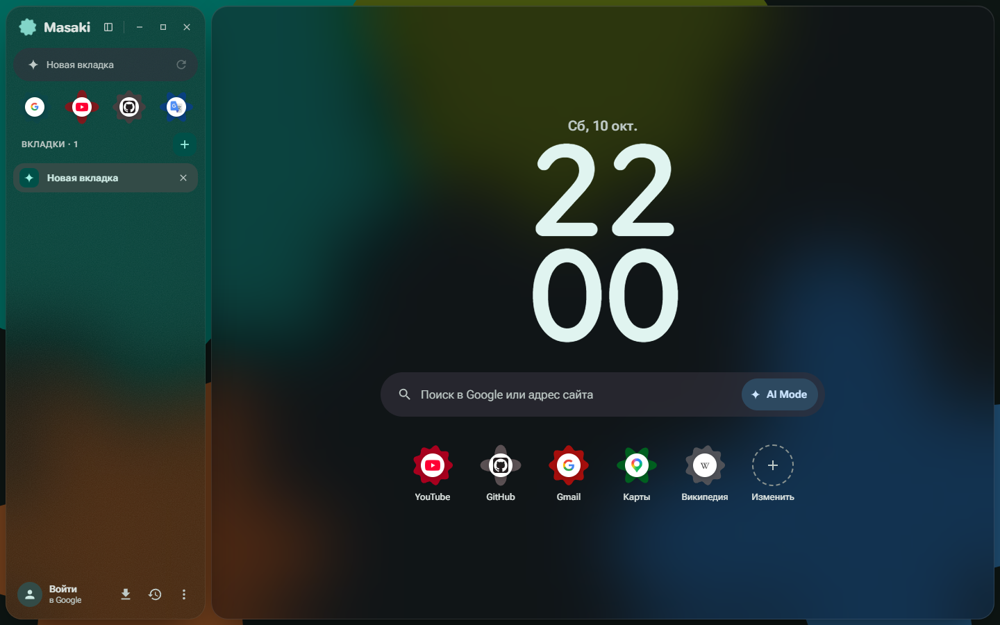

Masaki
Браузер для Windows на Chromium — матовое стекло, Material 3 Expressive и ничего лишнего.

Тихая панель и докВкладки, избранное и адрес слева или компактный док внизу — страница целиком.
ПалитраАдрес, поиск, AI Mode, вкладки и команды в одном поле посередине экрана.
СинхронизацияЧерез скрытую папку на вашем Google Диске; пароли шифруются вашей фразой.
Пароли и passkeyСвой менеджер паролей и ключей доступа, без облака разработчика.